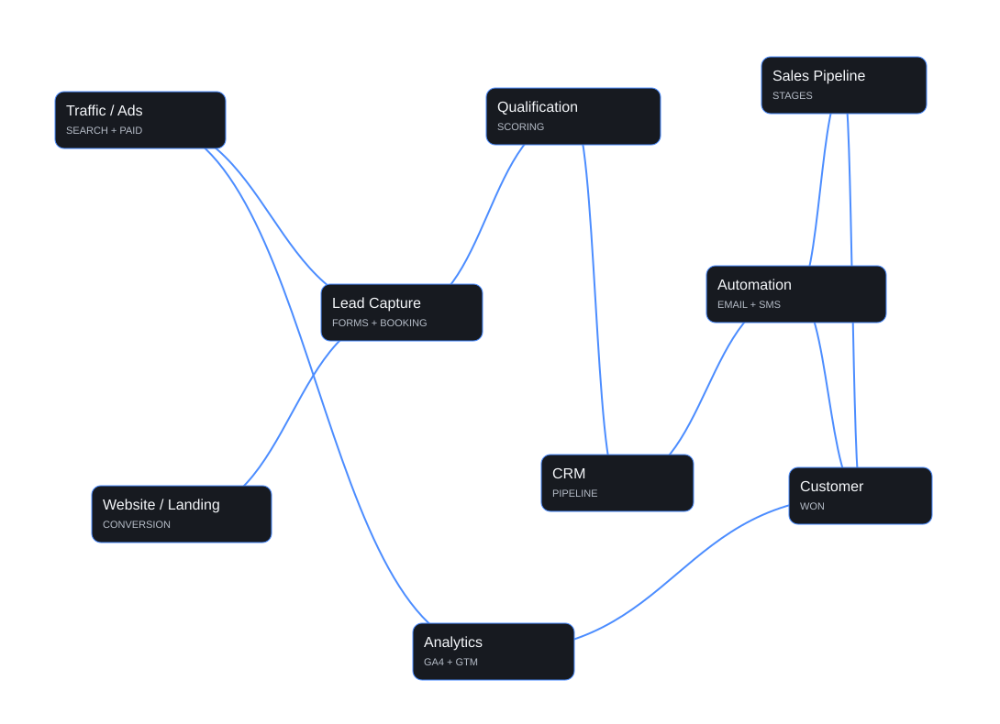
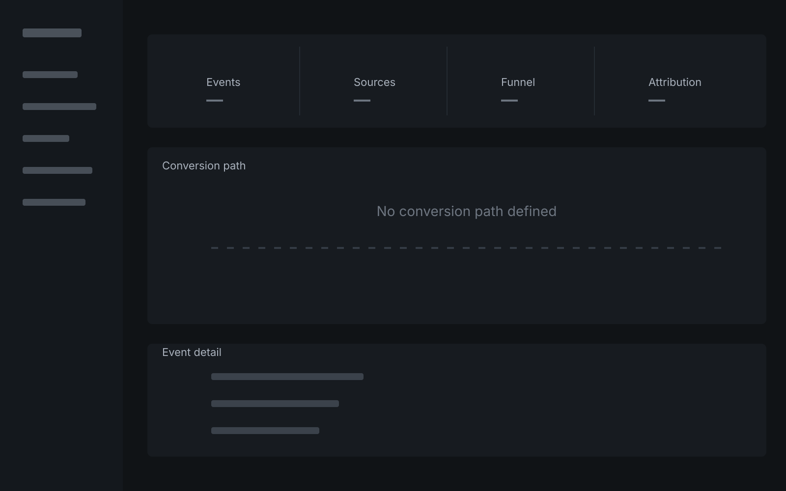
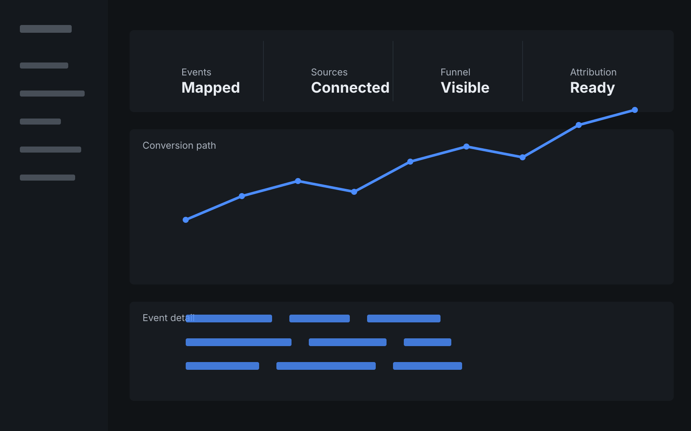

A form comes in at 7:40 PM. Nobody sees it until morning.

FOR HEALTH, WELLNESS & AESTHETICS
Turn more leads into booked visits
I build the systems that turn attention into qualified leads, booked calls, and revenue.
20 minutes · No pressure · Find out if an Audit makes sense
Try the Growth OS Scope EstimatorYour system, in your name. · 8 years working with medical and wellness practices
Rahmel Dela Cruz · Founder, Optivue Digital
Getting leads, but too few bookings?
Here's where they usually get lost.
The front desk means to call back. Then the phones ring.
Your ad report says one number. Your calendar says another.
A new client books. Nobody knows which ad sent her.
Seen any of these? Find your gaps in 90 seconds →
Rent your marketing system, or own it?
Many agencies build your system inside their own software account. You use it while you pay. When you leave, the workflows, pipelines, and history often stay behind.
I build everything in your name: your website, CRM, workflows, tracking, ad accounts, and data. If we stop working together, it all stays with you and keeps running.
| Renting (many agency sub-account setups) | Owning (Optivue) |
|---|---|
| Built in the agency's software account | Built in your own accounts |
| Leave, and the workflows often stay behind | Leave, and everything stays with you |
| Software cost often bundled into the fee | You pay software directly, and see what you pay for |
| You depend on the agency to run it | Documented, so anyone qualified can run it |
Fix follow-up before adding more leads.
Slow replies cost you bookings. Give your team a clear path from first contact to first visit.
- Set a reply target for each new lead.
- Keep calls and forms in one place.
- Make the next booking step clear.
- Show your team which leads need a reply.
- Track which leads book and attend visits.
Connect each step from lead to booked visit.
Five connected stages.
Get the right local leads.
I connect local search, Google Business Profile and paid campaigns to clear booking pages. Your plan sets the channels.
Google AdsLocal SearchGoogle Business Profile
Diagnose. Build. Improve.
Diagnose
I review your website, calls, forms, CRM, follow-up, booking and tracking. You get a 90-day plan with clear priorities.
Build
I build the fixes your plan puts first. These cover booking, tracking, lead routing, CRM stages and follow-up.
Improve
Each month, I review the results. I fix the next gap.
Results depend on access to your systems, your team's follow-up, booking capacity, and budget. I'll be clear about what I control and what I don't.
Built for businesses where an appointment is the sale.
My main focus is health, wellness, and aesthetics businesses: medical wellness and aesthetics practices, med spas, weight-loss and hormone practices, chiropractic and allied health, and functional wellness clinics. I also take on select consulting, training, and service businesses with the same challenge: leads arrive from different places, follow-up is uneven, and it's hard to see what happens between the first inquiry and a paying client.
What I build.
Example views show how leads, follow-up, bookings and reports connect.
Lead routing and consent-based follow-up
Landing pages with a clear next step
Track the booking path with GA4 and GTM
Help local clients find your business
Reporting, before and after tracking.
Same dashboard idea, different evidence. Before tracking, the important actions are disconnected. After tracking, events, sources, and funnel steps form one measurable path.


Tracking changes what the report can prove.
Without event mapping, reporting stops at traffic. Once the important actions are named and connected, the report follows the path from source to conversion and shows where handoffs break.
- BeforeTraffic exists, but the conversion path is incomplete.
- AfterEvents, sources, funnel steps, and attribution are connected.
Three ways to start.
Every plan starts with an Audit. All prices in USD.
1 · AUDITfrom $800one-timeSee exactly where leads get lost.
Credited toward Fix or Fix + Grow within 30 days.Growth Systems Audit
What's included
- Multi-channel review: Up to 3 channels, such as Google Ads, Meta, and Google Business Profile.
- Website and booking path: I test your contact and booking steps as a new lead would.
- Follow-up and CRM: How inquiries are logged, assigned, and followed up.
- Tracking check: Whether your reports show real bookings, not just clicks.
- Competitor gaps: How 3 nearby competitors capture and follow up with leads.
- Baseline numbers: Reply time, lead-to-booking rate, and show rate.
- Your 90-day plan: Top gaps ranked. Do now, do next, don't do yet. A 30-minute walkthrough call.
Timeline and payment
5–7 business days after payment and access. Paid upfront. Covers one location. Credited toward Fix or Fix + Grow within 30 days.
What I need from you
View access to your website, CRM, booking tool, analytics, and ad accounts.
Not included
Building or changing anything. Legal, privacy, or compliance review.
2 · FIXfrom $5,000one-time · 4–6 weeksI fix the biggest gaps. You run it.
After your Audit
Growth System Fix
Typical scope. Your exact scope comes from your Audit.
What's included
- Booking path: Fix your main landing page or booking path.
- CRM routing: Clear stages and lead routing to your team.
- Follow-up: One consent-based follow-up sequence.
- Tracking: Fix tracking for calls, forms, and bookings.
- Handoff: Built in your accounts, documented, with one recorded walkthrough.
- Post-launch fixes: 30 days included.
Timeline and payment
4–6 weeks. 50% to start, 50% on day 30.
What I need from you
Admin access, approvals within 2 business days, one staff contact for testing.
Not included
Ongoing management, ad management, extra pages or locations, CRM data migration.
3 · FIX + GROWfrom $3,500 setupthen $2,000/monthI fix it, then keep it growing.
Lower setup because we keep working together. Month-to-month after 8 weeks.After your Audit
Growth OS Partnership
Typical scope. Your exact scope comes from your Audit.
What's included
- Setup (8 weeks): Everything in Fix, plus campaign setup on 1–2 ad channels.
- Monthly growth: Up to 3 agreed changes per month, such as a follow-up message, a booking-page fix, or a campaign update.
- Ad management: 1–2 channels. Ad spend is separate.
- Reporting: A monthly report on leads and bookings, and a 30-minute call.
- Support: Reply within 1 business day, Monday to Friday.
Timeline and payment
Setup paid upfront. Then $2,000/month, billed monthly in advance, month-to-month. 12-month commitment: $1,750/month.
What I need from you
Timely approvals and access to your ad and CRM accounts.
Not included
Ad spend, new locations or service launches, major rebuilds.
Need upkeep only after a Fix? Systems Care, $350/month.
Systems Care
What's included
- Monthly checks: Forms, booking paths, and automations tested.
- Small fixes: Up to 1 hour per month.
- Support: Reply within 2 business days, Monday to Friday.
Timeline and payment
Billed monthly. For systems I built.
Not included
Ad management, new pages, and new automations.
Costs you pay directly: Ad spend goes straight to Google or Meta from your own ad account. SMS and software fees are billed to your accounts at the provider's rates. I don't mark them up.
Multi-location or complex setups get a custom proposal.
Clear expectations before work begins.
Optivue is a fit if
- You run a health, wellness or aesthetics business with space for bookings.
- You get leads or plan to generate them.
- You provide access to your website, CRM, booking, and call data.
- Your team wants to improve follow-up.
- You want systems you own and honest reporting.
Optivue is not a fit if
- You only want a website or ads in isolation.
- You want guaranteed patient numbers.
- You can't provide access to your systems.
- Your team lacks time to answer leads or book visits.

Audit first. Strategy next. Then systems.
I'm Rahmel. I build and manage your website, tracking, CRM and follow-up. You work with me throughout the project.
My eight years of work cover medical, wellness, consulting and other service businesses. I focus on the path to a booked visit.
I work with up to four businesses at once. I handle your build and answer your questions. I tell you before any handoff.
Questions before you start.
Why is the Audit paid?
You get a plan based on your real systems and data. It's credited toward your Fix or Fix + Grow if you continue within 30 days.
Do you guarantee more patients?
No one responsibly does. Results depend on demand, your offer, booking capacity, and how your team follows up. I commit to a defined process, clear scope, systems you own, and honest reporting.
When should I spend more on ads?
Check the booking path first. The Audit shows whether you need more leads or better follow-up.
Do I own everything you build?
Yes. Your ad accounts, website, CRM, tracking, workflows, data, and documentation stay yours.
What do you need from my team?
Access to your systems, prompt approvals, and a team ready to follow the new process.
Another provider quoted $999 a month. Why the difference?
Scope affects price. I review and build the full path from lead to booked visit. For ads alone, consider a provider focused on ad management.
Find the next step toward more booked visits.
In 20 minutes, I'll help you decide if an Audit fits your needs.